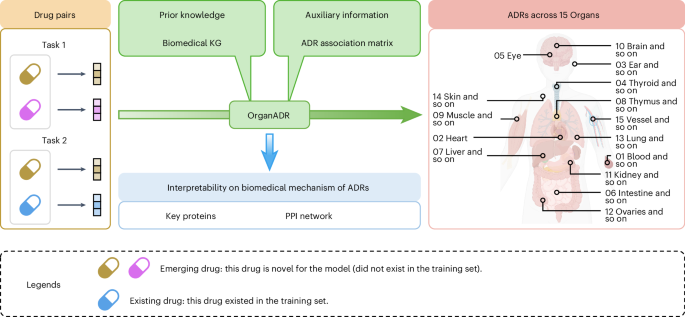
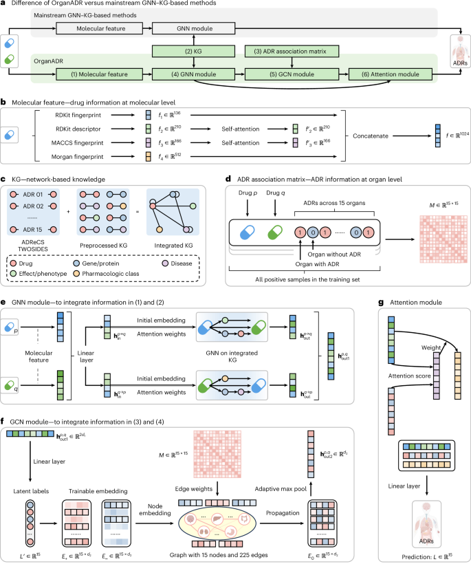
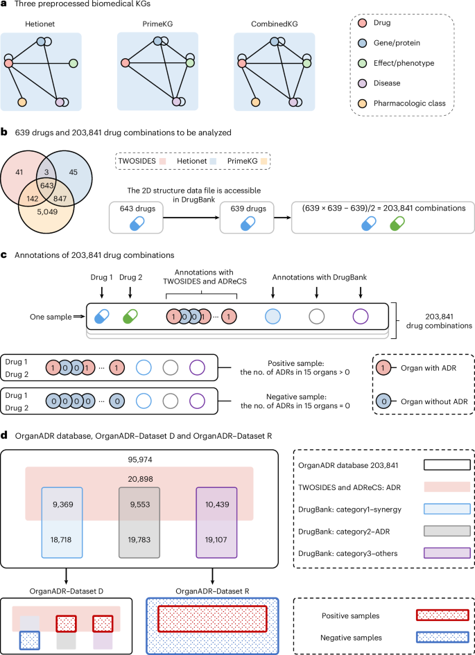
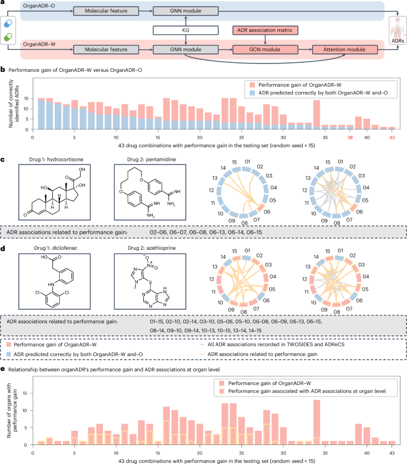
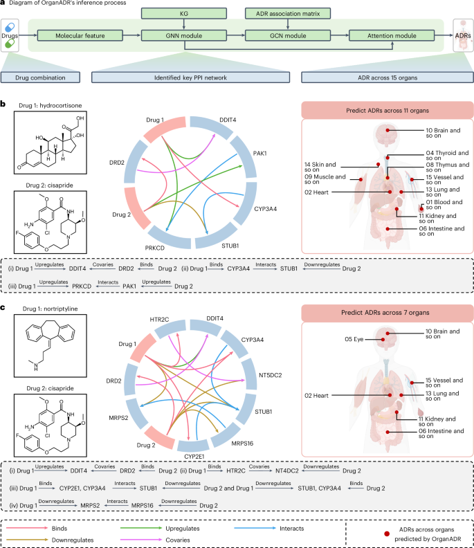

Predicting adverse drug reactions for combination pharmacotherapy with cross-scale associative learning via attention modules
OrganADR is an associative learning-enhanced deep learning model that predicts adverse drug reactions (ADRs) at the organ level for emerging combination pharmacotherapies. By fusing molecular-level drug features, biomedical knowledge-graph information and an organ-level ADR association matrix through GNN, GCN and attention modules, it achieves state-of-the-art performance across 15 organs (ROC-AUC 85.93% on task 2), while providing interpretable insights into the key protein–protein interaction networks that mechanistically underpin each ADR — a tool directly applicable to clinical precision medicine and drug safety management.
Why It Matters
- Addresses a critical clinical gap. 3.6–15.6% of hospital admissions worldwide are related to ADRs; accurate prediction for emerging drug combinations (cold-start) — where no clinical records yet exist — is an unresolved challenge with direct patient-safety implications.
- Introduces organ-level perspective. Existing models treat each ADR independently; OrganADR explicitly models the co-occurrence associations of ADRs across 15 organs via a symmetrically normalised association matrix, capturing biological reality (e.g., immune-related events co-affecting intestine, liver, and nervous system).
- Multi-scale, interpretable architecture. The model integrates molecular fingerprints, biomedical KG paths, and organ-level ADR co-occurrences into a single end-to-end framework with three interpretable outputs: organ-level predictions, key protein identification, and key PPI network extraction.
- Rigorous cold-start evaluation. Tested on two independent datasets (Dataset D and Dataset R) across two tasks, three KGs and 15 organs — demonstrating robustness, not just benchmark overfitting.
- Open science. Code (GitHub + Zenodo), preprocessed datasets (Zenodo) and source data are all publicly available, enabling reproducible clinical pharmacovigilance research.
Why Nature Computational Science (Editorial Fit)
- Novel computational framework, not incremental modelling: OrganADR introduces an associative-learning paradigm for multilabel biomedical prediction with a clear architectural novelty (GNN + GCN + attention + organ-level matrix) that advances the field beyond prior GNN–KG-based DDI methods.
- Cross-scale information integration: bridging molecular, organ, and network scales in one end-to-end model directly aligns with Nature Computational Science’s mandate for methods that span biological levels.
- Causal validation, not just ablation: the paper includes a rigorous causal analysis linking organ-level ADR information to measurable performance gain, raising the scientific standard above typical ablation studies.
- Broad translational impact: applicable to drug development, multimorbidity management and personalised clinical recommendations — the computational contribution has direct societal relevance beyond ML benchmarks.
Core Data — Sources & Volume
- ADR database
- TWOSIDES — the most comprehensive pairwise drug–ADR database, containing drug pair combinations with recorded ADRs; forms the primary source of positive samples. URL: tatonettilab.org.
- Drug information
- DrugBank (latest release) — provides 2D structure data files (SDF) for molecular fingerprint computation, and auxiliary annotation of drug synergies and other interactions. URL: go.drugbank.com.
- Biomedical KGs
- Hetionet (GitHub) and PrimeKG (Harvard Dataverse) — two heterogeneous biomedical knowledge graphs encoding drug–protein, protein–protein, disease–gene and other relationships. A fused CombinedKG is also constructed.
- ADR taxonomy
- ADReCS — used to map ADR symptoms from TWOSIDES to 15 organ/system categories following the MedDRA hierarchy. URL: bioinf.xmu.edu.cn.
- Drug scope
- 639 small-molecule drugs appearing simultaneously in TWOSIDES, Hetionet, PrimeKG and DrugBank (with accessible 2D SDF). These yield 203,841 unique drug combinations annotated across 15 organs.
- ADR-positive pairs
- 50,259 combinations (from TWOSIDES + ADReCS), out of 203,841 total. Split 8:1:1 into disjoint drug subsets for train/val/test under cold-start constraints.
- Organs covered
- 15 organ/system categories following ADReCS/MedDRA (e.g., cardiac, hepatic, gastrointestinal, nervous, endocrine, immune, renal, musculoskeletal, respiratory, skin, blood, eye, reproductive, urinary, vascular).
- Preprocessed data
- Available on Zenodo (zenodo.org/records/15129153). Code at GitHub and Zenodo.
| Dataset | Role | Volume / Scope | Access |
|---|---|---|---|
| TWOSIDES | Primary ADR labels for drug pairs | Comprehensive pairwise DDI-ADR database; 50,259 positive combinations extracted | tatonettilab.org |
| DrugBank (latest) | Molecular structure (SDF) + DDI annotation | 639 drugs with 2D SDF; 28,087 synergy + 29,336 ADR + 29,546 other DDI pairs | go.drugbank.com |
| Hetionet | Biomedical KG (prior knowledge) | Heterogeneous graph: drug, gene, disease, pathway nodes and typed edges | github.com/hetio |
| PrimeKG | Biomedical KG (prior knowledge) | Harvard Dataverse; multi-relational biomedical KG with broader entity coverage | dataverse.harvard.edu |
| ADReCS | Organ-level ADR taxonomy mapping | Maps ADR symptom terms to 15 MedDRA-aligned organ/system categories | bioinf.xmu.edu.cn |
Note: dataset statistics (639 drugs, 203,841 combinations, 50,259 positives) are stated explicitly in the article. Exact train/val/test split sizes vary by random seed; statistics reported in Supplementary Table 2.
Core Methods
- Molecular feature encoding: each drug is encoded as a 1,024-dimensional vector by concatenating RDKit Descriptor (with trainable self-attention), MACCS Fingerprint (with trainable self-attention), RDKit path-based fingerprint, and Morgan fingerprint (radius=2).
- Flow-based GNN on biomedical KG: propagates drug features through the KG via a 3-hop flow GNN with drug-dependent attention weights on each relation type, identifying key protein paths linking drug pairs.
- Organ-level ADR association matrix: a 15×15 symmetrically normalised conditional-probability matrix computed from training-set co-occurrences of ADRs across organ pairs; used as the GCN adjacency to explicitly model ADR correlations.
- GCN module: latent organ-level labels (from a linear multiclassifier on drug-pair embeddings) are fed into a GCN with the association matrix as edge weights; the GCN updates label embeddings to propagate organ-level information.
- Attention fusion module: combines molecular-level embeddings (GNN output) and organ-level embeddings (GCN output) via element-wise attention scoring, producing a concatenated representation for final multilabel prediction.
- Cold-start evaluation: drugs split 8:1:1 into disjoint subsets; task 1 — both drugs unseen in training; task 2 — one emerging, one existing. Evaluated by ROC-AUC, PR-AUC, accuracy, precision, recall, F1, and Hamming loss.
- Interpretability: drug-dependent attention weights on KG paths identify key PPI networks; organ-level association matrix provides organ-perspective reasoning; ablation and causal analysis confirm the contribution of each module.
- Baselines: compared against EmerGNN, HIN-DDI, KG-DDI, CSMDDI (deep learning) and RandomForest, KNeighbors, DecisionTree, GaussianNB (classical ML). OrganADR surpasses all on both tasks across three KGs.
Core Figures & Tables






Tables: no main-text tables (Tables = 0 in main text); Extended Data Fig. 1 and Supplementary Tables 1–35 (organ definitions, KG statistics, hyperparameter settings, per-organ performance) are in supplementary material.